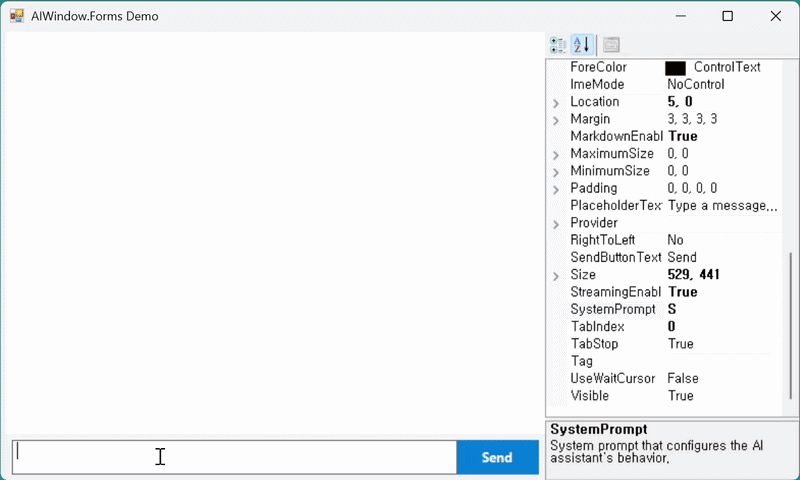

Bring AI chat to your business apps in 5 minutes.
Drop a verified AI chat component into your existing in-house desktop applications — no complex development required. Starting with WinForms and expanding across the entire Windows desktop landscape.
See it in action.
Watch an AIWindow component being placed into an existing WinForms application via drag-and-drop, then activated as a fully working AI chat surface.

The real barriers
to enterprise AI adoption.
Companies want to adopt AI, but security review, legacy compatibility, and development cost stop them before they start. Here are the five walls they keep hitting.
External supply-chain risk
A single AI library pulls in dozens of transitive dependencies. Each one becomes its own security review item.
Aging internal systems
Modern AI SDKs are hard to retrofit into legacy development environments that were never built for them.
Heavy build cost
Building a chat UI in-house — from layout to streaming — easily takes months of engineering time.
Strict security review
External packages with unclear provenance rarely clear corporate security policy and stall at the gate.
Regulatory compliance
In finance, healthcare, and the public sector, audit logging and data protection are not optional — they're table stakes.
Zero external risk.
Safe AI adoption.
AIWindow does not rely on third-party libraries. It's built on each platform's native framework and verified OS capabilities only — so your information security team can approve it quickly.
An intelligent chat solution
that moves business outcomes.
Reliable AI connectivity
Instantly connects to leading LLMs — OpenAI, Azure OpenAI, Anthropic — and any OpenAI-compatible self-hosted engine. Real-time streaming and automatic recovery, without dropouts.
User-centered interface
Intuitive conversation UI with high-quality rendering of Markdown, code blocks, and tables. Fully customizable to match your corporate brand.
Fast deployment and operation
Drag and drop in the Visual Studio designer, configure a few options, and it just works. Audit logging, role-based access, and an admin console come standard.
Three deployment models.
Pick the one that fits.
From Cloud to fully air-gapped, choose based on data sensitivity and infrastructure constraints. All tiers share the same AIWindow API and admin console.
Cloud
Connects directly to public LLM APIs like OpenAI and Anthropic. Fastest to deploy, with immediate access to the latest models.
Hybrid
Sensitive data stays on-premises; general traffic flows to the cloud. Strikes the right balance between cost and security.
On-Prem
LLMs run entirely inside your infrastructure. No outbound traffic. Compatible with network-segregated and classified environments. Works with Ollama, vLLM, LM Studio, and more.
We know why new tech
feels risky to adopt.
That is exactly why AIWindow minimizes external dependencies and runs only on each platform's native framework. As the UI stack expands, the trust boundary your enterprise has to verify does not shift. One security review carries forward into the next adoption.
Transforming AI work
across industries.
Finance — Knowledge assistant
AI answers complex internal policies and product details on demand. A safe environment with no sensitive data leakage, lifting team productivity.
Manufacturing — Equipment guidance
Ask AI on the floor instead of flipping through thick manuals. Drops into existing systems — no additional infrastructure required.
Healthcare — Decision support
AI parses vast clinical guidelines. Automatic record retention helps meet medical and other compliance requirements.
Public sector — Citizen service automation
Embedded in government workflow apps, AI drafts responses to citizen requests. Runs reliably even in fully air-gapped networks.
Now accepting early access inquiries.
A consulting program for enterprises evaluating AIWindow. We work through technical review, environment analysis, and license design together.
Apply for Early Access →